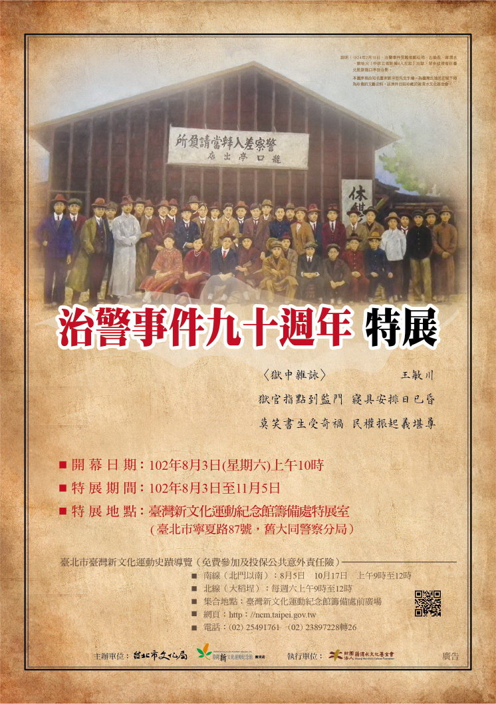

治警事件是日本殖民統治時代公共知識份子最大的政治案件，被稱為「臺灣政治運動史上的里程碑」，蔣渭水稱之為「臺灣獅子狩」，獅子日語發LL與志士相同，意指總督府對臺灣志士的獵捕。
大正12年（1923）12月16日 凌晨，總督府以違反治安警察法逮捕臺灣議會期成同盟會會員99人，經過豫審、釋放、公訴、上訴、服刑，長達一年五個月，歷經田健治郎、內田嘉吉、伊澤多喜男三位總督。
治警事件，島內外新聞封鎖二個半月，中國諸大新聞、英美等國報紙都有報導，成為國際間矚目的殖民地政治事件，是殖民地住民反專制爭取參政權，自決自治的強烈宣示。
展出日期：102年8月3日~11月5日。
展出時間：上午10時~下午5時。
展出地點：台灣新文化運動紀念館籌備處〈台北市寧夏路89號，舊台北北警察署〉
 |